Meditation, breathing and calm sound, in English and Thai. This guide shows where each reviewed feature lives. App Review Information carries a 90-second video of the same flows, including a live Global Pause.
Sign in. Welcome screen → “Already have an account? Log in”.
User name app-review@deeppeace.space; the password is in Sign-In Information. A regular member account: onboarding finished, no subscription.
Where things are. Tabs: Home, Sounds, Garden, Compassion, You. Settings is the gear at the top right of the You tab. Settings → Language switches English / Thai.
Global Pause is live 10 minutes a day.
| Bangkok | 8:40 PM (lobby opens 8:30 PM) |
| UTC | 13:40 |
| Cupertino | 5:40 AM |
In this guide
Contact: support@deeppeace.space · Settings → Contact us
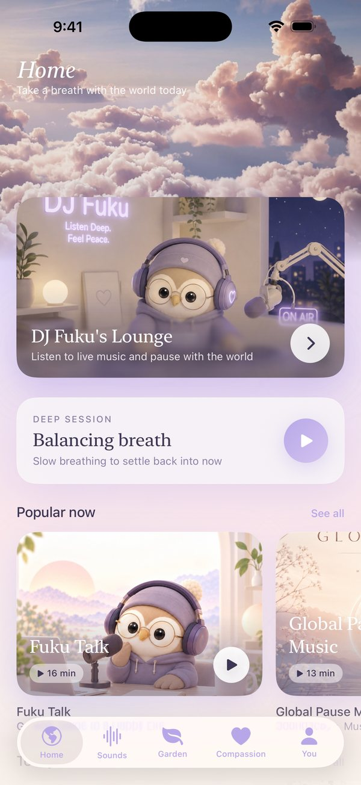
An auto-renewable subscription in the group “DEEP Premium”. It unlocks the sounds marked with a lock. Everything else in DEEP is free.
deep.pro.monthly ($9.99) and deep.pro.yearly ($59.99, 1-week free trial for new subscribers).
Sounds → Deep Music → BEAM → tap a locked track (e.g. “Little Garden”), or You → gear → Upgrade to DEEP Premium.
Locked sounds play straight away; purchases are verified on our server. Restore purchases is in Settings, and Manage subscription appears there once subscribed.
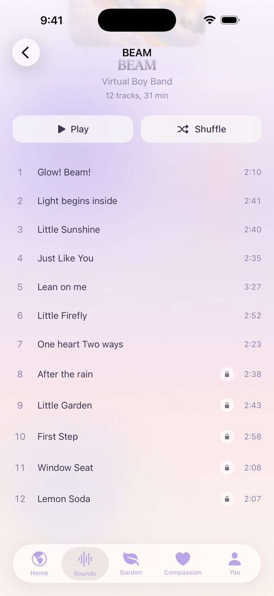
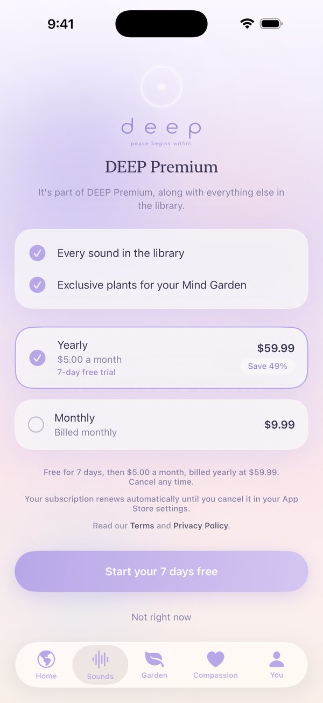
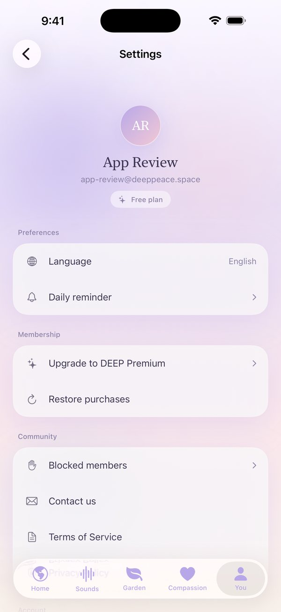
A shared 10-minute meditation once a day at 8:40 PM Bangkok time (5:40 AM Cupertino). At other times the Lounge shows a countdown and the peace messages. The attached video shows a live session.
Home → Fuku’s Lounge card → Join now. The button appears only while the session is open.
The globe shows roughly where people join from. Our server estimates country or city from the connection’s IP address. The app never asks for device location.
Members may leave a short peace message, which passes an English and Thai word filter before it is published.
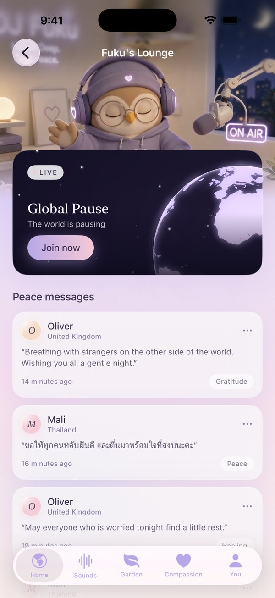
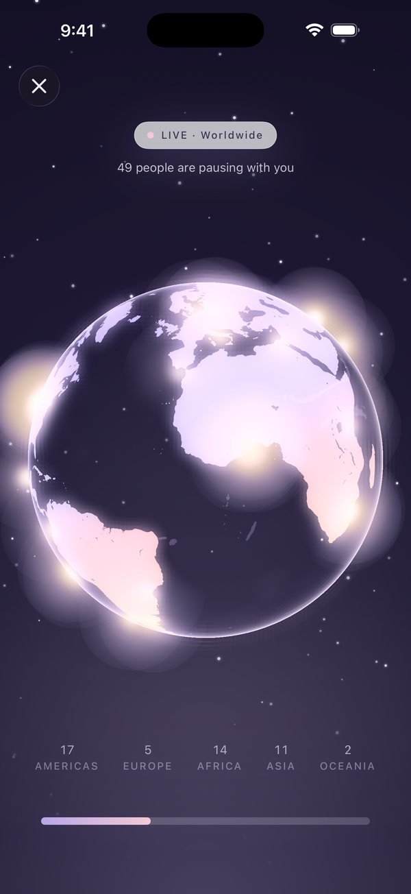
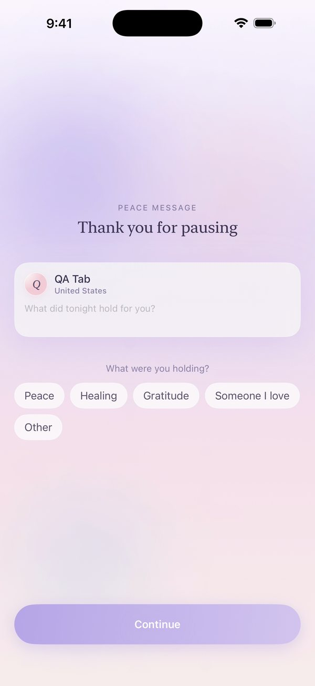
“•••” on any message → Report → Offensive, Harassment, Spam or Something else. It disappears for the reporter at once; after 3 reports it is hidden for everyone until reviewed.
“•••” → Block <name>. All of that member’s messages disappear. Settings → Blocked members lists them, with Unblock.
Word filter on posts and display names. Our team reviews reported messages in an admin queue within 24 hours, removes objectionable content and suspends members who break the Terms.
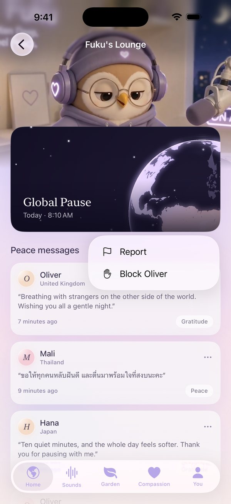
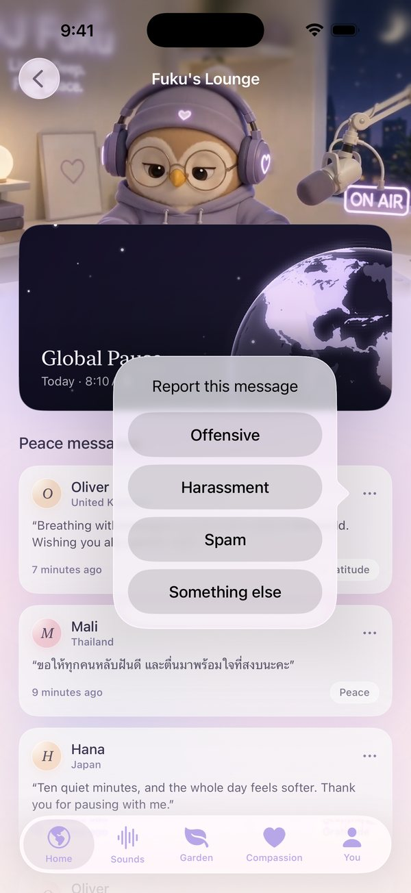
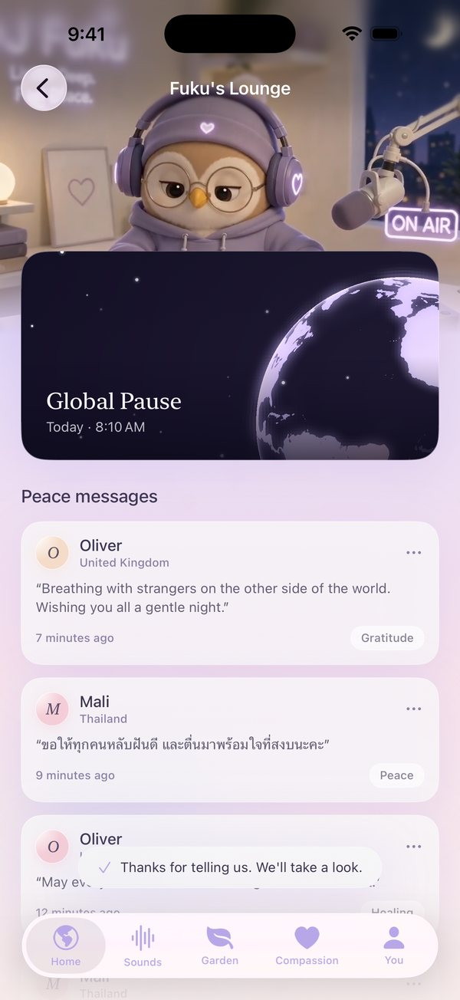
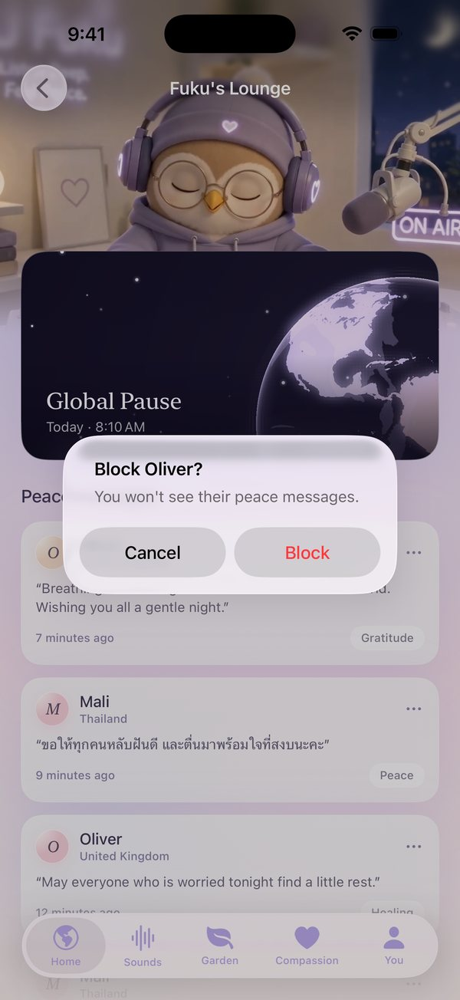
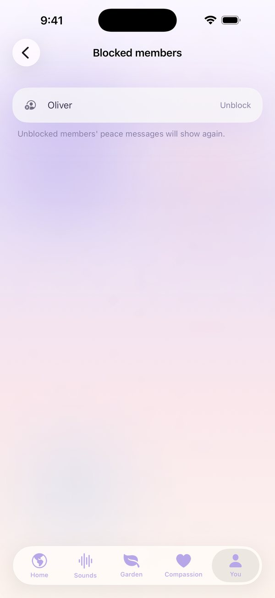
You → gear → Delete account. It permanently deletes the account and its data, and reminds members that an App Store subscription must be cancelled separately.
Earned by practicing, up to 30 a day, and sent to causes to show which ones members would like DEEP to support. Hearts cannot be bought, sold or exchanged for money; members never pay or donate in the app.
Background audio only keeps sounds playing on a locked screen. Notifications only if the member turns on Daily reminder. No ads, no tracking, no third-party sign-in. Not medical care.
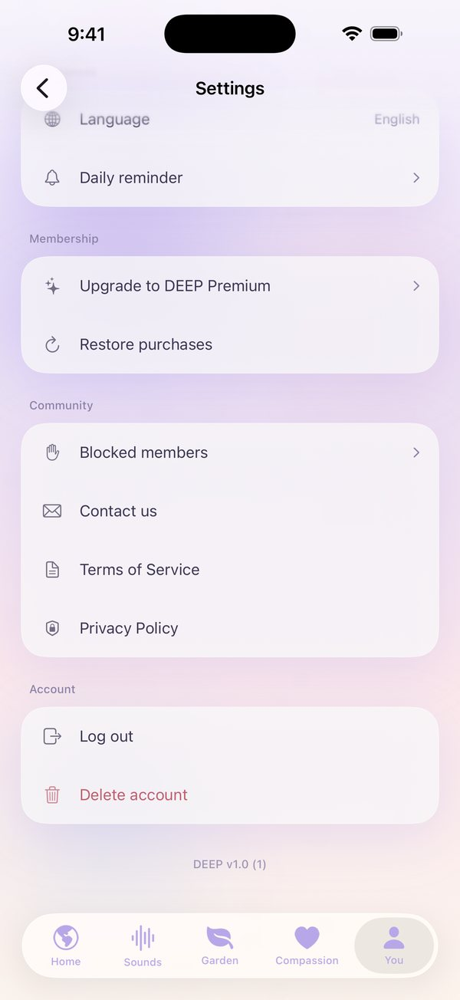
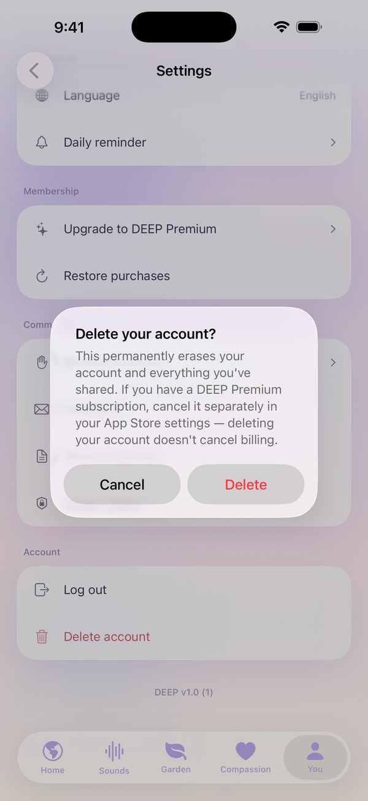
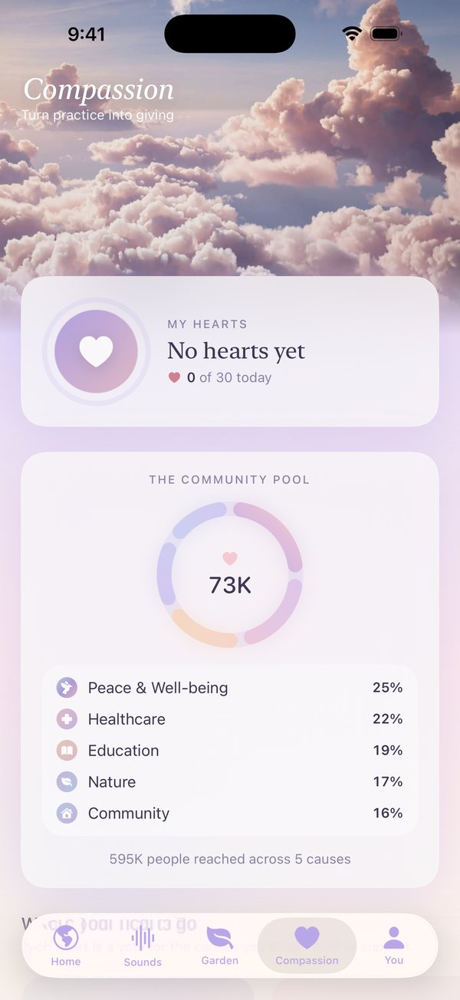